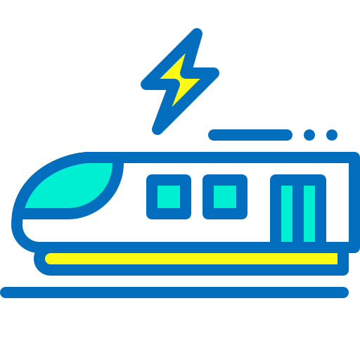
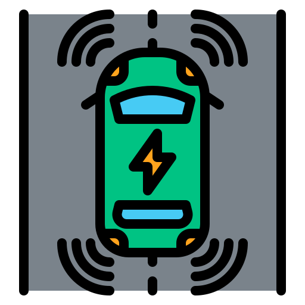

System-level control, from concepts to stable prototypes.
I work at the intersection of control, software, distributed computing, power electronics, mechatronics, and sensing. My focus: turning complex R&D ideas into stable, testable implementations.
MPC (centralized & distributed)
Power converters & drives
Real-time simulation
SW architectures
Estimation & robustness
Research interests (multidisciplinary)
Control
Rapid Prototyping
Distributed Computing
Energy

Railway

Self Driving
What I build
Control & Optimization
MPC, robustness, stability, saftey, distributed optimization.
Software & Computing
model-based design, modular & scalable solutions, automated testing platforms.
Sensors & Estimation
State estimation (EKF/UKF) & sensor fusion (planned).
Mechatronics & Drives
FOC, PMSM speed control, electromechanical modeling.
Electrification
power converter control, modular multilevel converters, microgrids, secondary regulation.